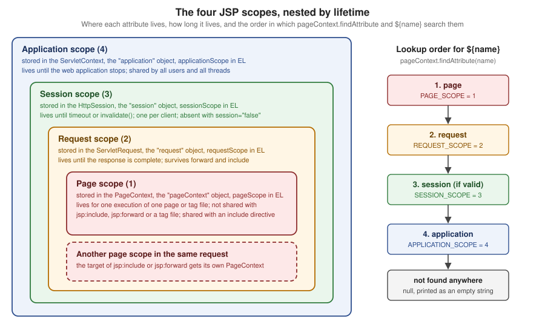

Implicit Objects & Scopes
|
This content was generated with the assistance of AI and should be verified against the official documentation before being relied on in production. |
This page is written against Jakarta Pages 4.0 (the specification Tomcat 11.0.26 implements), Jakarta Expression Language
6.0, Jakarta Standard Tag Library 3.0 and Jakarta Servlet 6.1, on Java 21. Everything was verified on 2026-10-08: the facts
against the Pages 4.0 specification and Javadoc, the Servlet 6.1 specification and the Tomcat 11.0 documentation, and every
example by building it into a Maven WAR and running it on Tomcat 11.0.26 with curl; the outputs shown are the outputs
that run produced. A JSP page is compiled into a servlet whose service method receives a request and a response and
nothing else, so everything else a page can touch has to come from somewhere. The container supplies a fixed set of
ready-made variables, the implicit objects, and it provides four named storage areas, the scopes, in which a page, a
servlet and a tag can leave data for one another. Almost every bug of the form "the page shows nothing", "the value is
from another user" or "the page only works the second time" is a scope or implicit-object mistake, which is why this page
comes before scripting, actions and tags. The running scenario is the Bookshelf, a small catalogue of books: a servlet
puts a Book in the request and forwards to a view under WEB-INF, and the views below read it, keep a cart in the
session and count visits in the application. The servlet side of the same four scopes is on the
Servlet Fundamentals page.
The Bookshelf Used on This Page
All the examples below are views of one WAR, deployed as g3implicit.war under the context path /g3implicit. A small
servlet (ViewServlet, mapped to /view/*) sets the request attributes book and who, increments a visit counter,
and forwards to /WEB-INF/views/implicit/<name>.jsp for a fixed list of view names; a ServletContextListener
(CatalogListener) stores catalogName and visits in the application scope at start-up. web.xml declares the
context parameter shelfName and a jsp-file servlet. The two Java classes are shown once here; every other listing
on the page is a JSP or a descriptor.
@WebServlet("/view/*")
public class ViewServlet extends HttpServlet {
private static final Set<String> VIEWS = Set.of(
"nine", "scopes", "el", "buffer", "nosession", "includes", "boom", "cart", "tagfile",
"plain", "overflow", "escape", "locals", "bad-decl", "bad-out", "bad-session");
@Override
@SuppressWarnings("unchecked")
protected void doGet(HttpServletRequest req, HttpServletResponse resp) throws ServletException, IOException {
String view = req.getPathInfo() == null ? "" : req.getPathInfo().substring(1);
if (!VIEWS.contains(view)) {
resp.sendError(HttpServletResponse.SC_NOT_FOUND);
return;
}
((AtomicInteger) getServletContext().getAttribute("visits")).incrementAndGet();
req.setAttribute("book", new Book(1, "Dune", "Frank Herbert", 1965));
req.setAttribute("who", "request (set by the servlet)");
if ("cart".equals(view)) {
HttpSession session = req.getSession();
List<String> cart = (List<String>) session.getAttribute("cart");
if (cart == null) {
cart = new ArrayList<>();
session.setAttribute("cart", cart);
}
String add = req.getParameter("add");
if (add != null) {
cart.add(add);
}
}
req.getRequestDispatcher("/WEB-INF/views/implicit/" + view + ".jsp").forward(req, resp);
}
}
@WebListener
public class CatalogListener implements ServletContextListener {
@Override
public void contextInitialized(ServletContextEvent event) {
event.getServletContext().setAttribute("catalogName", "Bookshelf catalogue");
event.getServletContext().setAttribute("visits", new AtomicInteger());
}
}The view name is looked up in a fixed set before it is put into the forward path, so a request cannot choose an arbitrary
file; the views stay under WEB-INF, so no URL reaches a JSP directly.
| View | URL under /g3implicit |
Concept |
|---|---|---|
|
|
the nine scripting implicit objects and their classes |
|
|
one name in four scopes, |
|
|
the EL implicit objects and the |
|
|
|
|
|
|
|
|
page scope across an include directive and |
|
|
|
|
|
|
|
|
session and application scope together |
|
|
implicit objects and scopes in a tag file |
|
|
escaping request data, scriptlet locals versus attributes |
|
|
translation errors the pitfalls table quotes |
Source: Jakarta Pages 4.0 — 1.8 Objects
Two Sets of Implicit Objects
The specification defines implicit objects twice, because a JSP page has two languages inside it. The Java scripting
variables (scriptlets and scripting expressions) can use nine objects without declaring
them: request, response, pageContext, session, application, out, config, page and, in error pages only,
exception. The Expression Language sees eleven different names: pageContext, the four scope maps pageScope,
requestScope, sessionScope and applicationScope, the request-data maps param, paramValues, header,
headerValues and cookie, and the context-parameter map initParam. Only pageContext is in both lists. The objects of
the first list are real Java objects of the types in the next table; the objects of the second list are mostly
java.util.Map views that the EL resolver builds on demand.
| Scripting variables (Java code in the page) | EL implicit objects | |
|---|---|---|
Where usable |
scriptlets |
|
Names |
|
|
Status |
legacy: scripting can be disabled for a whole application |
current: the recommended way to read data in a view |
Reaches an attribute through |
|
the scope maps, or the bare name |
Reaches |
directly |
only through |
The glossary of the specification states the same split in one sentence: the implicit objects are request, response,
pageContext, session, application, out, config, page and exception for scriptlets and scripting expressions,
and pageContext, pageScope, requestScope, sessionScope, applicationScope, param, paramValues, header,
headerValues, cookie and initParam for EL expressions.
The Nine Scripting Implicit Objects
The translator declares these variables at the top of the generated service method, so a scriptlet can use them by name. Each has a type from a core Java or Servlet package (Pages 4.0 Table JSP.1-6 and JSP.1-7).
| Variable | Type | What it is | Scope |
|---|---|---|---|
|
protocol-dependent subtype of |
the request that triggered the service invocation: parameters, headers, attributes, path information |
request |
|
subtype of |
the response: status, headers, cookies, redirect, error |
page |
|
|
the page context: the single API over the four scopes and the other objects |
page |
|
|
the session of the requesting client, created if there is none; valid for HTTP only; unavailable when the page declares |
session |
|
|
the servlet context obtained from the servlet configuration: one per web application |
application |
|
|
the buffered writer through which the template text and the actions write |
page |
|
|
the configuration of the servlet that runs this page: servlet name and initialization parameters |
page |
|
|
the instance of the page’s implementation class that handles the request; a synonym for |
page |
|
|
the uncaught |
page |
The first view asks each variable for its class. It is a scripting page, shown here as the "before" style the rest of the section replaces with EL and JSTL; it is the clearest way to see that these are ordinary Java objects.
<%@ page contentType="text/plain;charset=UTF-8" trimDirectiveWhitespaces="true" %>
request : <%= request.getClass().getName() %>
response : <%= response.getClass().getName() %>
pageContext : <%= pageContext.getClass().getName() %>
session : <%= session.getClass().getName() %>
application : <%= application.getClass().getName() %>
out : <%= out.getClass().getName() %>
config : <%= config.getClass().getName() %>
page : <%= page.getClass().getName() %>
page == this: <%= page == this %>
exception : not declared on this page, so any use is a translation errorcurl http://localhost:18080/g3implicit/view/nine on Tomcat 11.0.26request : org.apache.catalina.core.ApplicationHttpRequest
response : org.apache.catalina.connector.ResponseFacade
pageContext : org.apache.jasper.runtime.PageContextImpl
session : org.apache.catalina.session.StandardSessionFacade
application : org.apache.catalina.core.ApplicationContextFacade
out : org.apache.jasper.runtime.JspWriterImpl
config : org.apache.catalina.core.StandardWrapperFacade
page : org.apache.jsp.WEB_002dINF.views.implicit.nine_jsp
page == this: true
exception : not declared on this page, so any use is a translation errorThe class names are Tomcat’s and differ on Jetty or GlassFish; the interface types are what a page may rely on.
request is an ApplicationHttpRequest because the page was reached by RequestDispatcher.forward from the servlet:
after a forward the container hands the page a request object that exposes the new path while the original is still
reachable through the jakarta.servlet.forward.* attributes. The generated class lives in the package
org.apache.jsp with the escaped path WEB_002dINF.views.implicit (the hyphen of WEB-INF becomes _002d), and page
is that class’s instance, so page == this is true.
Four rules decide when these names are valid.
-
Declarations do not see them. A
<%! ... %>declaration becomes a field or a method of the class, outside the service method, sorequestdoes not exist there.<%! String title = request.getParameter("title"); %>fails to compile withrequest cannot be resolved(observed on Tomcat 11.0.26). Pass the value into a method as a parameter. -
The names are reserved and cannot be redeclared.
<% String out = "shadow"; %>fails withDuplicate local variable out(observed). The specification also reserves object names with the prefixesjspandjspx(the published HTML lists each of the two twice, apparently losing the underscore variants) for itself and recommends that new implicit objects be introduced through a tag library action such asdefineObjectsrather than as new names. -
sessiondepends on thesessionattribute of the page directive. Withsession="false"the page does not participate in a session, the variable is unavailable and any reference to it is a fatal translation error:session cannot be resolved(observed). -
exceptionexists only in an error page (isErrorPage="true"), where it is theThrowablethat caused the dispatch.
A tag file has a smaller set (Table JSP.8-5): request, response, session, application, out and config, plus
jspContext, a JspContext instead of pageContext, because a tag file can also run outside a servlet environment. There
is no page and no exception there.
PageContext: One Door to Everything
jakarta.servlet.jsp.PageContext extends jakarta.servlet.jsp.JspContext. The Javadoc describes it as one API that
manages the scoped namespaces, provides convenience accessors for the other implicit objects, supplies the JspWriter
and offers forward, include and error handling. The generated code obtains one PageContext per request from
JspFactory.getPageContext, passing the servlet, the request, the response, the error page URL, whether the page needs
a session, the buffer size and the autoflush flag, and releases it afterwards, which is how session="false" and the
buffer and autoFlush attributes of the page directive reach the runtime. Page authors do not call those lifecycle
methods; the rest of the class is for them and for tag handlers.
| Member | Purpose |
|---|---|
|
the |
|
stores in page scope; a |
|
stores in the given scope; a |
|
reads from page scope, or from the given scope; |
|
searches page, request, session (if valid) and application in that order and returns the first match, or |
|
the scope constant in which the name is found first, or 0 when it is nowhere |
|
an |
|
removes the name from every scope; |
|
the current |
|
typed accessors for the other implicit objects; |
|
an |
|
the |
|
dispatch to another resource of the same web application, as |
|
called by generated code when an exception escapes: forwards to the page’s |
Two reasons make the object worth knowing even when a page never mentions it. First, EL, JSTL and tag handlers all read
and write attributes through it: c:set calls pageContext.setAttribute(name, value, scope), and the bare ${name}
of EL is pageContext.findAttribute(name). Second, in EL it is the bridge to the scripting objects, because the EL
implicit objects have no request or session: ${pageContext.request.contextPath} and
${pageContext.session.id} are the only EL spellings.
The Four Scopes
A scope is a named storage area with an owner and a lifetime. The specification (1.8.2) defines four, and each is backed by an object of the Servlet API, so what a JSP writes is visible to servlets, filters and listeners, and the reverse.
| Scope | Backed by | Lifetime | Reached from a page as | Thread-safety |
|---|---|---|---|---|
page |
the |
until the response from this page is sent back, or the request is forwarded elsewhere |
|
one thread; nothing to protect |
request |
|
until the request has been processed; reachable from every page that handles the same request, including after a forward |
|
one thread, unless a servlet starts asynchronous work |
session |
|
until the session ends (timeout, |
|
several requests of one client may run at once: guard mutable values |
application |
|
until the context is reclaimed (the web application stops); also reachable from pages that take no part in a session |
|
every request of every user: guard mutable values |

findAttribute and a bare ${name} search themThe specification adds an ideal that containers are allowed to leave unenforced: a name should mean one object at every
point of the execution, that is, all the scopes should behave as a single name space. A page that stores who in
every scope violates the ideal and is a bug waiting to happen, but it is legal and the lookup order decides what the page
sees. The view below exercises exactly that.
<%@ page contentType="text/plain;charset=UTF-8" trimDirectiveWhitespaces="true" %>
<%@ taglib prefix="c" uri="jakarta.tags.core" %>
<c:set var="who" value="page" scope="page"/><c:set var="who" value="session" scope="session"/><c:set var="who" value="application" scope="application"/>
requestScope.who (from the servlet) : ${requestScope.who}
who, all four scopes hold a value : ${who} (found in scope ${pageContext.getAttributesScope('who')})
<c:remove var="who" scope="page"/>who after removing the page copy : ${who} (scope ${pageContext.getAttributesScope('who')})
<c:remove var="who" scope="request"/>who after removing the request copy : ${who} (scope ${pageContext.getAttributesScope('who')})
<c:remove var="who" scope="session"/>who after removing the session copy : ${who} (scope ${pageContext.getAttributesScope('who')})
<c:remove var="who" scope="application"/>who after removing every copy : [${who}] (scope ${pageContext.getAttributesScope('who')})
PAGE_SCOPE=<%= jakarta.servlet.jsp.PageContext.PAGE_SCOPE %> REQUEST_SCOPE=<%= jakarta.servlet.jsp.PageContext.REQUEST_SCOPE %> SESSION_SCOPE=<%= jakarta.servlet.jsp.PageContext.SESSION_SCOPE %> APPLICATION_SCOPE=<%= jakarta.servlet.jsp.PageContext.APPLICATION_SCOPE %>
<%
out.println();
pageContext.setAttribute("tmp", "a");
pageContext.setAttribute("tmp", "b", jakarta.servlet.jsp.PageContext.REQUEST_SCOPE);
out.println("findAttribute(tmp) : " + pageContext.findAttribute("tmp"));
pageContext.removeAttribute("tmp");
out.println("after removeAttribute(tmp) : " + pageContext.findAttribute("tmp"));
pageContext.setAttribute("n", "x", jakarta.servlet.jsp.PageContext.SESSION_SCOPE);
pageContext.setAttribute("n", null, jakarta.servlet.jsp.PageContext.SESSION_SCOPE);
out.println("session n after set(null) : " + session.getAttribute("n"));
%>curl http://localhost:18080/g3implicit/view/scopesrequestScope.who (from the servlet) : request (set by the servlet)
who, all four scopes hold a value : page (found in scope 1)
who after removing the page copy : request (set by the servlet) (scope 2)
who after removing the request copy : session (scope 3)
who after removing the session copy : application (scope 4)
who after removing every copy : [] (scope 0)
PAGE_SCOPE=1 REQUEST_SCOPE=2 SESSION_SCOPE=3 APPLICATION_SCOPE=4
findAttribute(tmp) : a
after removeAttribute(tmp) : null
session n after set(null) : nullThe output demonstrates five rules. The nearest scope wins: the page copy hides the request copy, which hides the session copy,
which hides the application copy. Removing a copy with c:remove and a scope removes only that one, so the next scope
shows through; c:remove without scope, like pageContext.removeAttribute(name), removes the name from all scopes at
once, which is what the scriptlet shows. A name found nowhere gives scope 0 and the empty string, never an error. Storing
null removes the attribute. The request copy came from the servlet, so a servlet-set request attribute and a
JSP-set page attribute are the same kind of thing seen from different sides.
The spec text of findAttribute says the session is searched "if valid"; that is the practical meaning of the next view.
Sessions: Created by Default, Optional with session="false"
A JSP page takes part in a session by default. The generated code asks for the session when the page starts, so even a page
that never mentions session makes the container create one and send the session cookie. The view below is the smallest
page there is, and the second view opts out.
<%@ page contentType="text/plain;charset=UTF-8" %>
hello$ curl -si http://localhost:18080/g3implicit/view/plain | head -4
HTTP/1.1 200
Set-Cookie: JSESSIONID=8661771569EED1FB9390DC52194EFFE3; Path=/g3implicit; HttpOnly
Content-Type: text/plain;charset=UTF-8
Content-Length: 7session="false"<%@ page contentType="text/plain;charset=UTF-8" session="false" trimDirectiveWhitespaces="true" %>
<%@ taglib prefix="c" uri="jakarta.tags.core" %>
pageContext.session : [${pageContext.session}]
sessionScope.cart : [${sessionScope.cart}]
request.getSession(false): <%= request.getSession(false) %>
<%
try {
pageContext.setAttribute("a", "b", jakarta.servlet.jsp.PageContext.SESSION_SCOPE);
} catch (IllegalStateException e) {
out.println("setAttribute in session scope: IllegalStateException " + e.getMessage());
}
%>curl -si http://localhost:18080/g3implicit/view/nosession (no Set-Cookie header, status 200)pageContext.session : []
sessionScope.cart : []
request.getSession(false): null
setAttribute in session scope: IllegalStateException Cannot access session scope in page that does not participate in any sessionTwo consequences follow. A public, cacheable page that nobody logs in to should declare session="false", otherwise every
anonymous request creates a session object in memory, sends a cookie that defeats shared caches, and invites session
fixation questions the page has no reason to raise. And EL is forgiving where scripting is strict: on the page without a
session ${sessionScope.cart} is simply empty, while the scriptlet variable session does not compile. The Servlet
side (session creation, timeouts, cookie flags, changeSessionId) is on the
Servlet Fundamentals page.
How the session is tracked is a separate question from where it lives. The container sends the JSESSIONID cookie shown above;
for a client that refuses cookies it can fall back to URL rewriting, which appends ;jsessionid=... to the links that a page
passes through response.encodeURL (or c:url), and encodeRedirectURL does the same for a redirect target. Rewriting is
optional, and a session id that travels in a URL leaks through logs and the Referer header, so a current application sets
<tracking-mode>COOKIE</tracking-mode> and leaves the links alone; the details are in
Session security and the cookie flags in the
Security page.
Page Scope Is Per Page, Not Per Request
Page scope belongs to one PageContext, and a PageContext belongs to one page execution. Two mechanisms put a second
page into the same request, and they differ exactly in this respect: the include directive merges the other file into
the translation unit at translation time, so the two share one page scope, while jsp:include calls the other page at
request time, which gets its own PageContext and therefore its own page scope but the same request, session and
application scopes.
<%-- includes.jsp --%>
<%@ page contentType="text/plain;charset=UTF-8" trimDirectiveWhitespaces="true" %>
<%@ taglib prefix="c" uri="jakarta.tags.core" %>
<c:set var="owner" value="includes.jsp" scope="page"/><%@ include file="shared-part.jspf" %>after include directive, page scope sees : [${fromPart}]
<jsp:include page="inner.jsp"/>after jsp:include, page scope sees : [${pageScope.innerPage}]
after jsp:include, request scope sees : [${requestScope.innerRequest}]
<%-- shared-part.jspf --%>
<c:set var="fromPart" value="set in shared-part.jspf, owner is ${owner}" scope="page"/>
<%-- inner.jsp --%>
<%@ page contentType="text/plain;charset=UTF-8" trimDirectiveWhitespaces="true" %>
<%@ taglib prefix="c" uri="jakarta.tags.core" %>
<c:set var="innerPage" value="set in inner.jsp (page)" scope="page"/><c:set var="innerRequest" value="set in inner.jsp (request)" scope="request"/>inner.jsp page scope sees owner : [${owner}]
inner.jsp request scope sees who: [${requestScope.who}]curl http://localhost:18080/g3implicit/view/includesafter include directive, page scope sees : [set in shared-part.jspf, owner is includes.jsp]
inner.jsp page scope sees owner : []
inner.jsp request scope sees who: [request (set by the servlet)]
after jsp:include, page scope sees : []
after jsp:include, request scope sees : [set in inner.jsp (request)]So data that an included fragment must read or leave behind travels in request scope (or as jsp:param parameters), never
in page scope. The page that covers both inclusion mechanisms in full is Includes, Forwards and Page Composition of this
section; here only the scope consequence matters.
Request Scope: The Controller-to-View Channel
Request scope is the channel of the Model 2 pattern. The servlet computes, calls request.setAttribute, and forwards; the
JSP only reads. Because the forward stays inside one request, the attributes arrive, and because a redirect starts a new
request, they do not. The cart view shows request, session and application scope in one page: the servlet put the visit
counter in the application at start-up and a Book in the request, and the cart list lives in the session across
requests.
<%@ page contentType="text/plain;charset=UTF-8" trimDirectiveWhitespaces="true" %>
<%@ taglib prefix="c" uri="jakarta.tags.core" %>
visits (application scope): ${applicationScope.visits}
catalogue : ${applicationScope.catalogName}
cart (session scope) : <c:forEach var="t" items="${sessionScope.cart}" varStatus="s">${s.first ? '' : ', '}<c:out value="${t}"/></c:forEach>curl -c jar "...?add=Dune" then curl -b jar "...?add=Neuromancer"visits (application scope): 4
catalogue : Bookshelf catalogue
cart (session scope) : Dune, NeuromancerThe visit count was 4 because three earlier requests had passed through ViewServlet; the counter is an AtomicInteger the
listener stored, which is the right shape for application scope: a mutable object shared by every request thread must be
thread-safe itself. The cart is a plain ArrayList in the session, which is acceptable only while one client rarely
sends two requests at the same time; the spec warns that a session can be reached by several threads at once, so a cart
that two browser tabs update concurrently should be a synchronized or copy-on-write structure. In a distributable
application every session attribute must also be Serializable, which ArrayList<String> is and a bean holding a
connection is not.
What Belongs in Which Scope
Scope is also a design decision with security consequences. The rule of thumb is to store each value in the narrowest scope that still works.
| Data | Scope | Reason |
|---|---|---|
The |
request |
computed per request; gone with the response |
A loop variable or a computed label |
page |
not needed outside this page; |
The cart, the signed-in user’s id, a flash message waiting for the redirected page |
session |
must survive across requests of one client; keep it small and serializable; never keep another user’s data here |
The catalogue name, a read-only reference list, a thread-safe counter |
application |
identical for everyone; any mutable value needs its own synchronization |
A password, a token, a card number |
none of them |
do not store secrets in an attribute that a page or a log line could print; look them up when needed |
Per-user data in |
never |
every user sees and overwrites it: a classic cross-user leak |
JspWriter and the Response Buffer
out is a jakarta.servlet.jsp.JspWriter, an abstract class that extends java.io.Writer and emulates parts of
BufferedWriter and PrintWriter. Everything the page produces goes through it: the template text, <%= %> values, the
output of c:out and of every tag. It differs from PrintWriter in one respect, which explains the odd signatures: its
print methods declare IOException.
The writer buffers by default, and the reason matters. If the page is not
buffered, output goes straight to the PrintWriter of the response and the headers are committed with the first byte. If
it is buffered, the PrintWriter is not even created until the buffer is flushed, so until then the page can still call
setContentType, sendRedirect, sendError or add headers. The specification states that headers are sent only at the
first flush; after that those calls are invalid.
| Member | Purpose |
|---|---|
|
the size of the buffer in bytes |
|
the number of unused bytes in the buffer |
|
whether an overflow flushes (true) or fails (false) |
|
writes the buffer to the response and commits it |
|
discards the buffer; throws |
|
discards the buffer; unlike |
|
flushes and closes the stream; the generated code calls it for the initial writer, so a page never needs to |
|
write values; every |
|
constants for the buffering mode; |
The size and the overflow policy are set with the buffer and autoFlush attributes of the page directive (the default
is at least 8 KB and autoFlush="true"), or for a group of pages with the buffer element of a JSP property group. The
view below prints a few facts, discards the buffer, flushes, and then tries to change the response.
clearBuffer, and the late header<%@ page contentType="text/plain;charset=UTF-8" buffer="8kb" autoFlush="true" trimDirectiveWhitespaces="true" %>
buffer size : <%= out.getBufferSize() %>
remaining : <%= out.getRemaining() %>
autoFlush : <%= out.isAutoFlush() %>
<%
out.print("0123456789");
int before = out.getRemaining();
out.clearBuffer();
out.println("remaining before clearBuffer: " + before + ", after: " + out.getRemaining());
out.flush();
response.setHeader("X-Late", "ignored");
response.setStatus(202);
out.println("committed after flush: " + response.isCommitted());
%>curl -si http://localhost:18080/g3implicit/view/bufferHTTP/1.1 200
Set-Cookie: JSESSIONID=6A03C09DEA200703F6A9A806EB4BB973; Path=/g3implicit; HttpOnly
Content-Type: text/plain;charset=UTF-8
Transfer-Encoding: chunked
remaining before clearBuffer: 8125, after: 8192
committed after flush: trueRead the output carefully. The first three lines of the page, buffer size, remaining and autoFlush, are gone because
clearBuffer() discarded everything written so far (the buffer held 67 bytes: 8192 minus 8125). The status is still 200
and there is no X-Late header although the scriptlet set a header and a status of 202: both calls came after flush(),
which had committed the response, and the container ignores them. The response is chunked because the length was no
longer known when the headers went out.
The second policy is a failure instead of a flush. With autoFlush="false" an overflow throws an IOException.
autoFlush="false" and a 1 KB buffer<%@ page contentType="text/plain;charset=UTF-8" buffer="1kb" autoFlush="false" trimDirectiveWhitespaces="true" %>
<%
out.println("size " + out.getBufferSize() + ", autoFlush " + out.isAutoFlush());
try {
for (int i = 0; i < 200; i++) {
out.print("0123456789");
}
} catch (java.io.IOException e) {
response.setStatus(500);
out.clearBuffer();
out.println("IOException: " + e.getMessage());
}
%>$ curl -si http://localhost:18080/g3implicit/view/overflow | tail -1
IOException: Error: JSP Buffer overflowThat policy suits pages whose client is an application rather than a browser and needs complete data or none, as the
Javadoc explains; an error page can then still replace a half-built answer.
With autoFlush="true" the same loop would flush and commit, and a later error would produce a truncated page with a
200 status. For tags, pageContext.pushBody() replaces out with a BodyContent so a tag can capture the output of
its body, and popBody() restores the previous writer; this is how c:out and every body tag compose output, and
the custom-tag pages of this section (Classic Handlers and SimpleTag) build on it.
EL Implicit Objects and How the Resolver Finds Them
In EL the same data is reached through the eleven implicit objects. The JSP container passes a
jakarta.el.CompositeELResolver to every expression, and its first component is the ImplicitObjectELResolver, so an
implicit object name wins over any attribute of the same name. A bare identifier that matches no implicit object reaches
ScopedAttributeELResolver near the end of the chain, which does exactly pageContext.findAttribute(name). The
specification gives the example ${product}: it searches the page, request, session and application scopes in that
order and returns the first match.
| Name | Type and source | Notes |
|---|---|---|
|
the |
the only bridge to |
|
|
only the page scope, no search |
|
|
only the request scope |
|
|
empty, not an error, when the page has no session |
|
|
only the application scope |
|
|
first value of a repeated parameter |
|
|
all values; |
|
|
header names are case-insensitive; bracket syntax for names with a hyphen: |
|
|
all values of a repeated header |
|
|
the first cookie of a name wins; its order is unspecified by Servlet, so do not rely on duplicates; |
|
|
the |
Because the resolver chain is shared with the whole EL language, its order is worth knowing: after the implicit objects
come the resolvers registered with JspApplicationContext.addELResolver (the hook Jakarta Faces uses), the stream
resolver, StaticFieldResolver, MapELResolver, ResourceBundleELResolver, ListELResolver, ArrayELResolver,
RecordELResolver, BeanELResolver (everything with a non-null base), and then ScopedAttributeELResolver,
ImportELResolver and NotFoundELResolver for names without a base. NotFoundELResolver always resolves, returning
null, which is why an unknown name prints nothing; the errorOnELNotFound setting turns that into a
PropertyNotFoundException and is the first thing to switch on while developing. The EL language itself, operators and
type coercion are on the Expression Language Basics and EL Operators & Type Coercion pages of this section.
<%@ page contentType="text/plain;charset=UTF-8" trimDirectiveWhitespaces="true" %>
<%@ taglib prefix="c" uri="jakarta.tags.core" %>
<c:set var="param" value="attribute named param" scope="request"/>
param.q : ${param.q}
paramValues.tag[1] : ${paramValues.tag[1]}
header.accept : ${header.accept}
header['x-shelf'] : ${header['x-shelf']}
headerValues['x-shelf'][0] : ${headerValues['x-shelf'][0]}
cookie.theme.value : ${cookie.theme.value}
initParam.shelfName : ${initParam.shelfName}
context path : ${pageContext.request.contextPath}
method : ${pageContext.request.method}
request.method (no such object) : [${request.method}]
requestScope.param : ${requestScope.param}
requestScope.book.title : ${requestScope.book.title}
sessionScope : ${empty sessionScope ? 'empty' : 'has entries'}curl -H 'X-Shelf: top' -H 'Cookie: theme=dark' "http://localhost:18080/g3implicit/view/el?q=dune&tag=sf&tag=classic"param.q : dune
paramValues.tag[1] : classic
header.accept : */*
header['x-shelf'] : top
headerValues['x-shelf'][0] : top
cookie.theme.value : dark
initParam.shelfName : Main shelf
context path : /g3implicit
method : GET
request.method (no such object) : []
requestScope.param : attribute named param
requestScope.book.title : Dune
sessionScope : emptyThe two traps are in the output. ${request.method} is empty because EL has no request object: request there is
just a name that the scoped-attribute resolver looks up as an attribute, finds nowhere, and resolves to null; the
correct spelling is ${pageContext.request.method}, and nothing warns about the mistake unless errorOnELNotFound is
on. And ${param.q} still worked after c:set created a request attribute called param, because the implicit object
param is consulted first; the attribute is reachable only as ${requestScope.param}. The same shadowing applies to
header, cookie, initParam, pageContext and the scope names, so never name an attribute after an implicit object.
Request data is untrusted. param, header, cookie and initParam values reach the page unchanged, and ${...} in
template text does not escape them. The next view shows the difference in an HTML page, with the query parameter q
set to a script tag.
c:out<%@ page contentType="text/html;charset=UTF-8" trimDirectiveWhitespaces="true" %>
<%@ taglib prefix="c" uri="jakarta.tags.core" %>
<p>raw : ${param.q}</p>
<p>c:out : <c:out value="${param.q}"/></p>q=<script>alert(1)</script> (URL-encoded in the request)<p>raw : <script>alert(1)</script></p>
<p>c:out : <script>alert(1)</script></p>The first line is a cross-site scripting hole; the second is the secure default. Every EL expression that prints request
data into HTML goes through c:out (or fn:escapeXml, or an encoder of the OWASP Java Encoder library), and the
escapeXml attribute of c:out defaults to true. The scope maps are equally untrusted when the value came from a user:
data stored in sessionScope by one request is output by another.
Scriptlet Locals Are Not Attributes
Java local variables of a scriptlet and scope attributes are different things that merely share a page. EL sees only attributes, and a scriptlet sees only locals plus whatever it fetches from a scope.
<%@ page contentType="text/plain;charset=UTF-8" trimDirectiveWhitespaces="true" %>
<%@ taglib prefix="c" uri="jakarta.tags.core" %>
<% String shelf = "local variable"; pageContext.setAttribute("note", "page attribute"); %>
EL sees the scriptlet local shelf : [${shelf}]
scriptlet sees the attribute note : [<%= (String) pageContext.getAttribute("note") %>]
EL sees the attribute note : [${note}]EL sees the scriptlet local shelf : []
scriptlet sees the attribute note : [page attribute]
EL sees the attribute note : [page attribute]To hand a scriptlet value to EL, store it with pageContext.setAttribute; to hand an EL-visible value to a scriptlet, read
it with pageContext.findAttribute. Mixing the two styles in one page is the usual reason for the question "why is my
variable empty", and the cure is to stop writing scriptlets (see the Scripting Elements page of this section).
config and page
config is the ServletConfig of the servlet that executes the page. For a plain .jsp file the container creates that
servlet itself, with the name jsp on Tomcat and no initialization parameters; the two things a page author uses it for are
getServletName() and getInitParameter(...), which are meaningful once the page is declared in web.xml with
<jsp-file>, so that the declaration can carry <init-param> entries. getServletContext() returns the same object as
application. page is the page instance, this, and is almost never useful to page code.
jsp-file servlet with an init parameter, a context parameter, and config.jsp<context-param>
<param-name>shelfName</param-name>
<param-value>Main shelf</param-value>
</context-param>
<servlet>
<servlet-name>shelfConfig</servlet-name>
<jsp-file>/WEB-INF/views/implicit/config.jsp</jsp-file>
<init-param>
<param-name>pageSize</param-name>
<param-value>20</param-value>
</init-param>
</servlet>
<servlet-mapping>
<servlet-name>shelfConfig</servlet-name>
<url-pattern>/config</url-pattern>
</servlet-mapping><%@ page contentType="text/plain;charset=UTF-8" trimDirectiveWhitespaces="true" %>
servlet name : <%= config.getServletName() %>
init-param pageSize : <%= config.getInitParameter("pageSize") %>
context-param : <%= application.getInitParameter("shelfName") %>
application same as config.getServletContext(): <%= application == config.getServletContext() %>
page == this : <%= page == this %>curl http://localhost:18080/g3implicit/configservlet name : shelfConfig
init-param pageSize : 20
context-param : Main shelf
application same as config.getServletContext(): true
page == this : trueFor a context-wide setting prefer the <context-param> and read it as ${initParam.shelfName}; the per-page
config is the right tool only for a page that is genuinely one configured servlet.
exception and pageContext.errorData
A page names its error page with errorPage="..." in the page directive, and a page that serves as an error page declares
isErrorPage="true". Only then does the exception variable exist, and pageContext.getErrorData() returns an
ErrorData with the facts the Servlet container recorded in the jakarta.servlet.error.* request attributes. Pages 4.0
added method and queryString to ErrorData, together with the matching Servlet 6.1 attributes
jakarta.servlet.error.method and jakarta.servlet.error.query_string. The full error-handling story, including
web.xml error pages and their precedence, is the subject of the Error Handling page of this section.
<%-- boom.jsp --%>
<%@ page contentType="text/plain;charset=UTF-8" errorPage="error.jsp" %>
<% if (true) { throw new IllegalStateException("shelf is full"); } %>
<%-- error.jsp --%>
<%@ page contentType="text/plain;charset=UTF-8" isErrorPage="true" trimDirectiveWhitespaces="true" %>
exception : <%= exception %>
errorData.status : ${pageContext.errorData.statusCode}
errorData.method : ${pageContext.errorData.method}
errorData.uri : ${pageContext.errorData.requestURI}
errorData.query : ${pageContext.errorData.queryString}
errorData.servlet : ${pageContext.errorData.servletName}
errorData.throwable: ${pageContext.errorData.throwable.message}
exception in EL : ${pageContext.exception.message}curl -si "http://localhost:18080/g3implicit/view/boom?x=1" (status line HTTP/1.1 500)exception : java.lang.IllegalStateException: shelf is full
errorData.status : 500
errorData.method : GET
errorData.uri : /g3implicit/WEB-INF/views/implicit/boom.jsp
errorData.query : x=1
errorData.servlet : jsp
errorData.throwable: shelf is full
exception in EL : shelf is fullThe request URI is the path of the page that failed (the forward target under WEB-INF), not the URL the user typed, and
the servlet name jsp is the Tomcat servlet that compiles and runs every JSP. Two cautions follow. The exception message
and class are internal information, so an error page for the public prints a generic message and logs the throwable; the
exception and errorData objects are for the log. And the PageContext Javadoc says getErrorData is meaningless in
a page that is not an error page.
Implicit Objects and Scopes in a Tag File
A tag file is a JSP fragment packaged as a custom tag. It has its own page scope, jspContext is its context object, and
the request, session and application scopes are the caller’s. The tag below writes one attribute to its own page scope
and one to the request, and prints the class of its jspContext.
<%-- card.tag --%>
<%@ tag body-content="empty" trimDirectiveWhitespaces="true" %>
<%@ taglib prefix="c" uri="jakarta.tags.core" %>
<c:set var="tagLocal" value="private to the tag file" scope="page"/>
<c:set var="tagShared" value="visible to the caller" scope="request"/>
jspContext class: <%= jspContext.getClass().getName() %>
tag sees its own page scope: [${tagLocal}]
tag sees the request attribute book.title: [${requestScope.book.title}]
<%-- tagfile.jsp --%>
<%@ page contentType="text/plain;charset=UTF-8" trimDirectiveWhitespaces="true" %>
<%@ taglib prefix="b" tagdir="/WEB-INF/tags" %>
<b:card/>
page scope after the tag : [${tagLocal}]
request scope after the tag: [${requestScope.tagShared}]curl http://localhost:18080/g3implicit/view/tagfilejspContext class: org.apache.jasper.runtime.JspContextWrapper
tag sees its own page scope: [private to the tag file]
tag sees the request attribute book.title: [Dune]
page scope after the tag : []
request scope after the tag: [visible to the caller]The page scope of the tag file is private: the caller does not see tagLocal unless the tag declares it with a
variable directive, which synchronizes a tag-file variable with the caller’s page scope. The request attribute is the
shared channel, and a tag that writes request attributes without documenting them is a source of surprising coupling.
The Tag Files & Layouts and Custom Tags pages of this section cover variable, attribute and the variable-synchronization rules.
Pitfalls and Error Names
| Symptom or error | Cause | Fix |
|---|---|---|
|
EL has no |
|
|
declarations are outside the service method, so the implicit variables do not exist there |
pass the value as a method parameter, or drop the declaration |
|
a scriptlet redeclared an implicit variable name |
choose another name; never reuse the nine names or the |
|
the page says |
remove the use, or take |
|
|
write to the session from a page that takes part in one, or from a servlet |
Every anonymous request gets a |
JSPs take part in a session by default |
|
An included page cannot see the including page’s variable (observed) |
|
pass data as request attributes or |
A page attribute named |
implicit objects are resolved before attributes |
reach the attribute as |
Scriptlet local variable is empty in EL (observed) |
EL reads attributes, not Java locals |
|
Header or status set late has no effect (observed) |
the buffer was flushed, so the response was committed |
set headers first; avoid explicit |
|
|
raise |
The top of the page is missing after |
|
call it before the first output you want to keep, or not at all |
A counter in |
a plain |
|
One user sees another’s data |
per-user data stored in |
keep user data in |
|
a non-serializable object in a session of a |
store |
Request attribute missing after a redirect |
a redirect is a new request; request scope ends with the first response |
store it in the session, or pass it as a query parameter and re-read it |
|
EL does not escape |
|
|
|
check |
What Changed Recently
| Change | Detail |
|---|---|
Pages 4.0 (Jakarta EE 11) |
minimum Java 17; the deprecated classes of the |
Pages 3.1 (Jakarta EE 10) |
|
Pages 3.0 (Jakarta EE 9) |
|
EL 6.0 |
|
Servlet 6.0 |
|
Servlet 6.1 |
|
Where the Books Are Outdated
The implicit objects and the four scopes are the part of JSP that has changed least since 2001, so the concepts the books teach (Web Development with JavaServer Pages chapters 4 and 6, and JSTL in Action chapters 1 to 3, listed in the section bibliography) still hold. What has moved around them is the platform, the style and a few APIs.
| The books' era | Today (Pages 4.0, EL 6.0, Servlet 6.1) |
|---|---|
The nine implicit objects used in scriptlets throughout |
still valid; but scriptlets are legacy, and pages read data through EL and JSTL, with scripting switched off by a |
|
|
|
removed in Servlet 6.0; |
|
removed in Pages 4.0 together with |
EL only inside JSTL 1.0 attribute values (the |
container EL everywhere since JSP 2.0, with the implicit objects of this page |
JSP 1.2 and JSTL 1.0 |
|
|
|
|
|
|
removed in Pages 4.0; use |
Application-managed scope usage with per-user maps in |
a per-user value belongs to the session; shared mutable state needs thread-safe types |
|
removed in Pages 4.0, as applets are no longer supported by browsers |